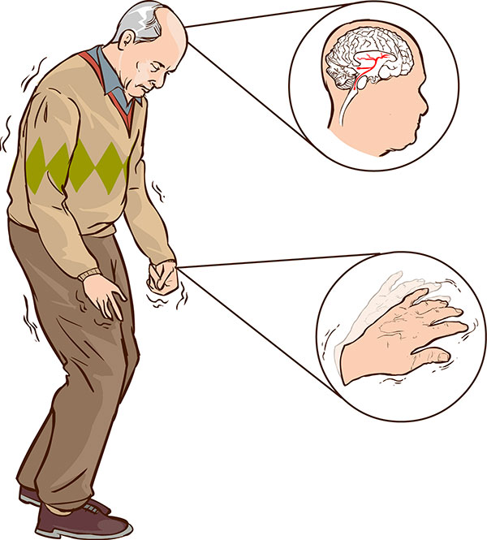

Works
Machine learning and Deep learning
Parkinson disease detection

# Parkinson's Disease detection classifier on the PD speech feature dataset
# Applied Principle Component Analysis(PCA) to reduce dimentionality and features
# Computed Eigenvalues and Eigenvectors to identify Principle Components.
# Compared Accuracy various Machine Learning Classification Models: before-after PCA.
# Technologies used - Scikit learn,Pandas, Matplot, Numpy
Check it out on github
Art Generation with Neural Style Transfer
# Neural Style Transfer (NST) using VGG-19, a 19-layer version of the VGG network.
# Generated novel artistic images, style cost function, content cost function
# Technologies used - Tensorflow,Keras, Matplot, Numpy
Check it out on github
Image Segmentation using U-Net
# Image segmentation on the CARLA self-driving car dataset
# Applied sparse categorical crossentropy for pixelwise prediction
# Skip connections to prevent border pixel information loss and overfitting in U-Net
# Technologies used - Tensorflow,Keras, Matplot, Numpy
Check it out on github
SIGNS recognization using ResNet
# Recognizing SIGNS dataset using ResNet with 50 layers
# Very deep Residual Networks are built by stacking the identity block and the convolutional blocks together.
# Skip connections to address the Vanishing Gradient problem
# Technologies used - Tensorflow, Keras, Matplot, h5py
Check it out on github
Cat or Non-cat Classification using a Deep neural network
# Build a deep neural network to supervised learning.
# Initialize parameters, Forward propagation, Compute cost function, Backward propagation, Update parameters
# Use trained parameters to predict labels
# Technologies used - Python, Matplot, Numpy, pandas, scipy, h5py
Check it out on github